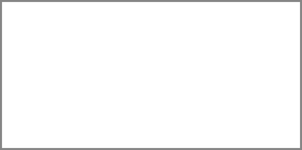

30. Բավականության Մեջ Արթնացածը
 |
Ինքնաբավությունը իր ներսում ճանաչելով բավարար լինելու ուժը, այլևս չի սպառնում աշխարհին ոչ մի պահանջով։
Երբ բոլորը փնտրում էին ավելին քան պետք է, նա կանգ առավ ոչ թե այն պատճառով, որ հոգնեց կամ հիասթափվեց, այլ որովհետև զգաց, որ ամեն ինչ արդեն տեղի է ունեցել։ Ոչ մի մեծ իրադարձություն չնշանավորեց այդ պահը։ Ոչ մի խորհրդանշական բան տեղի չունեցավ, բայց ներսում դանդաղ, ինչպես արևը՝ որը չի խլում մթության կերպը, այլ պարզապես բացում է լույսը, ինչ-որ բան բացվեց ու այդ պահից սկսած նա այլևս ոչինչ չփնտրեց։ Նա արթնացել էր։ Արթնացել էր ոչ թե հանուն իմաստության։ Այլ հանուն բավ լինելու։
Այս պարագայում ժամանակը դադարում է թելադրել: Ամեն քայլի մեջ, անգամ երբ ամեն ինչ կանգնած է, իմաստ է գալիս։ Շարժում կա թե չէ՝ դա միևնույն է, որովհետև այլևս չի ապրվում կյանքը որսալու համար, այլ բավ լինելու։
Ինքնաբավ լինելը հազվագյուտ տիեզերական վիճակ է, որից բխած կամքը համակերպված չէ ճակատագրին, այլ ընկալում է իր ներսի գոյության հոսքը որպես չփորձված ճշմարտություն: Ընկալում է այն ոչ թե գոհունակության ստվեր, այլ ամբողջականություն առանց լրացման պահանջի։
Բավականության մեջ արթնանալ՝ նշանակում է դուրս գալ ժամանակից՝ ոչ թե կանգ առնելու, այլ նրա անհետացման մեջ տեղ ունենալու համար։ Այդտեղ չկան նպատակներ՝ կա ուղղվածություն, չկան ավարտներ՝ կան բացվահայտումներ։ Իսկ ամենահետաքրքիրն այն է, որ այդտեղից չի սկսվում պատմությունը՝ այլ ընդամենը հայտնաբերվում է։
Արթնացած լինելը չի պահանջում արթնանալ։ Սա ներսի մի վիճակ է, երբ քունն այլևս խանգարող չէ՝ երբ լույսը չունի աղբյուր, որովհետև ինքդ ես աղբյուրը, երբ տեսնելը աչքերին չի պատկանում՝ այլ զգայությանը, որը բառ չունի, բայց ունի ճշմարտություն։ Հենց այդ պատճառով, նա՝ ով բավ է, նա՝ ով արթուն է բավականության մեջ, այլևս ոչինչ չի փնտրում, ոչինչ չի ժխտում, ոչինչ չի սպասում։ Նա պարզապես ներկա է։
Ոչինչ չունենալը բերում է այն բացարձակ վիճակին, որտեղ այլևս էլ ոչինչ չկա, որից հրաժարվես։ Երբ ոչ մի բան չես փնտրում, դու արդեն այնտեղ ես՝ ուր փնտրտուքը երբեք չի հասնի։
Երբ չես սպասում, ոչ մի բան չի ուշանում։ Եվ հենց այդ չսպասման մեջ է, որ հայտնվում է այն՝ ինչ երբեք չէր կարող հասանելի լինել՝ քանի դեռ ուզում էիր հասնել։
Ինքնաբավությունը գոյության վիճակ չէ, այլ՝ ճանաչողության բարձրագույն աստիճան։ Այն չի գալիս ձեռքբերմամբ, այլ՝ կորստով։ Ոչ թե կուտակելով ես հասնում դրան, այլ թողնելով։ Ոչ թե ավելացմամբ, այլ հանմամբ։ Բավարարությունը ճշմարտության չափորոշիչն է՝ այնտեղ, որտեղ այլևս հարցեր չկան։
Արթնացածը նա է, ով հասկացել է որ գոյությունը ինքնին ամբողջ է, և ինքը՝ որպես գոյի արթնացած կետ, պետք չունի իրեն բացատրելու։ Նա պարզապես գիտի՝ առանց ապացույցի։ Նա զգում է՝ առանց զգացմունքի աղմուկի։ Նա տեսնում է՝ առանց բացատրական լույսի։ Նա ապրում է՝ առանց գոյությունը փոխելու ցանկության։
Բավարար լինել չի նշանակում կանգ առնել կամ ինչ-որ տեղ հասնել։
Դա վիճակ է, երբ վերջապես տեսնում ես՝ ինչ կա հենց հիմա՝ խայտառակ ու պարզ, առանց զարդարանքների՝ ոչ իդեալացված, ոչ փրկության ակնկալիքով, այլ իրական՝ մերկ ու խոցելի։ Բավարարությունը չի ծնում հպարտություն, այլ ստիպում է ընդունել քո սահմանափակումներն ու անվստահությունը՝ առանց փախուստի։
Այնտեղ, որտեղ լիությունն ու պակասը զուգահեռ են և քեզ հետ համընթաց՝ զգում ես միաժամանակյա մենակություն և աշխարհին լիովին կապվածություն:
Արթնացած լինելը չի խոստանում ազատություն՝ ինչպես շատերն են պատկերացնում։ Այն տեղ է, ուր դու կանգ ես առնում քո իսկ գոյության առաջ՝ առանց փախուստի, առանց դիմադրության։ Եվ հենց այդ պահին դու հասկանում ես, որ ինքնաբավ ես։
Նպատակների բացակայությունը որպես ինքնաբավության ուղի
Ինչպիսին է այն գոյությունը, որտեղ ճանապարհները չեն ուղղորդում, նպատակները չեն ձգում, իսկ աշխարհը այլևս չի կարող քեզ ստիպել շարժվել։ Դա այն պահն է, երբ ներսում դադարում է թախծոտ հարցը՝ «ինչու», ու սկսում ես հասկանալ, որ ամեն ինչ արդեն կա։ Իսկ երբ ի վերջո այդ գիտակցումը հայտնվում է, ոչինչ չի ավելանում, միայն բացվում է։ Դու ինքնաբավ ես դառնում ոչ թե խաբուսիկ ինքնախաբեությամբ կամ ինչ որ հավանականության մեջ քեզ տեսնելով, կամ էլ կրելով զգացողություն, որ գտել ես ճիշտ ուղին, որը միայն մտավոր պատրանք է անիրական, այլ բացարձակ հստակության ու խաղաղության մեջ, որտեղ յուրաքանչյուր քայլդ՝ թեկուզ դադար, խոսում է որպես մի ամբողջ պատմություն։
Այդ պահերին դու չես դադարում փնտրել, այլ դադարում ես խառնվել աշխարի հետ։ Չկա այն պայքարը, որը քաշում էր դրսից, այլ կա մի երկխոսություն՝ որը սկսվում է միայն քո ներսից։ Նույնիսկ այն հարցը՝ «Կարո՞ղ ես լինել լիարժեք առանց նպատակներ ունենալու», կորցնում է իր խճճվածությունը՝ դառնալով պարզ ու տպավորիչ։
Դա չի նշանակում որ թողնում ես աշխարհը՝ այլ պարզապես ասում ես՝ «հասել եմ»։
Երբ նպատակներն ավարտվում են, իրական ճանապարհը սկսվում է ոչ թե մի տեղ հասնելու, այլ պարզապես լինելու արվեստում։
Ավարտի բացակայությունը իբրև անսահման միտում
Ավարտը երբեք չի նշանակում դադար կամ ավարտ։ Երբ մարդիկ ասում են՝ «այստեղ ավարտվում է ամեն ինչ», նրանք շատ հաճախ միայն սահմանափակում են իրենք իրենց։ Իրականում ավարտ չկա, որովհետև ամեն ավարտի հետևում թաքնված է նոր սկիզբ, անտեսանելի մի գործընթաց, որը չի ճանաչում սահմաններ։
Այդ անհասկանալի սահմանադրությունը՝ ավարտի մանիֆեստը, գալիս է չընկալման շեմից։ Ավարտը երբեք չի ենթադրում վերջ կամ դադար, պարզապես մի պահ լռում է ժամանակի ճնշումը՝ խորհրդանշելով մի կեղծ ավարտի տրամադրություն։
Երբ ելման կետից տեսնում ես ավարտի չգոյությունը, սկսում ես հասկանալ, որ ժամանակը ու տարածությունը չեն սահմանափակում մեր քայլերը, այդ մենք ենք դրանք սահմանափակում՝ սահմանելով «ավարտ»-ի եզրերը։
Ինքնաբավությունը հենց այն պատճառով է, որ չկա ավարտ, որովհետև բավականության մեջ ժամանակը դադարում է դնել սահմաններ, իսկ մեզ՝ որպես բավի մի մասնիկ, ոչինչ չի ստիպում դադարել։
Պետք չէ «ճիգերով հասնել» կամ «փոփոխվել»: Պարզապես պետք է ապրել։ Ավարտի բացակայությունը նույնն է, ինչ ներքին ընդունվածությունն ու ինքնաբավությունը։
Երբ հասնում ես այն վիճակին, որտեղ ոչինչ չես փնտրում՝ «ավարտ»-ի կարիքը դադարում է։ Եվ հենց այս անսահման մղումը ազատություն է չունենալով:
Այսպես «ավարտ»-ի բացակայությունը դառնում է ոչ թե մղում, այլ շարունակական գոյության անսահման միտում։
Ավարտը երևակայության մի հարված է, որից ինքնաբավությունը անպաշտպան է:
Ապրելու հավասարակշռությունը որպես խաղաղ գոյության արվեստ
Ի՞նչ է նշանակում ապրել առանց ճոճքի, առանց ներքին անհամաչափության, առանց փնտրտուքի ցնցումների։ Արդյո՞ք հավասարակշռությունը մի վիճակ է, թե մի կերպ ապրելու ձև։ Իսկ եթե այն ոչ թե նպատակ է, այլ արվեստ, կարո՞ղ է արդյոք մարդը ապրել խաղաղ՝ առանց ձգտելու «ավելիին»։
Հավասարակշռությունը չի ծնվում այն ժամանակ, երբ ամեն ինչ հանգիստ է։ Այն ծնվում է այն պահին, երբ հանգստությունն այլևս պայման չէ։ Երբ չես ապրում նյարդային ինքնակառավարմամբ, այլ ընտրում ես չապակայունանալը առանց ճիգի։ Դա ներքին ռիթմ է, որը չի ձգտում գերազանցել ոչ քեզ, ոչ աշխարհին։
Ապրելու արվեստը հավասարակշռության մեջ է: Երբ գիտակցում ես որ կյանքը ոչ թե մաքառման դաշտ է, այլ ներկայի հետ ներդաշնակ մի փոխակերպում՝ պայքարը դադարում է: Այն դադարում է, որովհետև որևէ բանի հասնելու ճնշումն այլևս չի ղեկավարում ներսդ։
Խաղաղությունը բխում է հենց այդ անկաշկանդ ապրելու եղանակից։ Ոչ մի պարտադրված ընթացք, ոչ մի դիմադրություն, միայն ընթացքի ընդունում՝ առանց պարտքի զգացողության։ Հավասարակշռությունը արվեստ է, որովհետև այն ճշգրտություն է պահում աշխարհի և քո ներսի միջև։
Ապրելու հավասարակշռությունը այն տիրույթն է, որտեղ քո ամենափոքր շարժումը դառնում է տիեզերքի մի ամբողջական արտացոլում։
Փնտրելու դադարը որպես ներքին խաղաղություն
Երբ փնտրելու մղումը մարում է, ոչ թե որովհետև ամեն ինչ գտնվել է, այլ որովհետև այլևս անհրաժեշտ չի գտնել, սկսվում է մի վիճակ, որում հոգին չի ձգտում լրացնել իրեն։ Փնտրելն ինքնին մի ձև է անհամաձայնության՝ այս պահի ու ներկայության նկատմամբ, իսկ դադարեցված որոնումը նշանակում է, համաձայնվել այն ամենի հետ ինչ կա, առանց վախենալու թերի մնալուց։
Ներքին խաղաղությունը չի գալիս պարզ գտածոներով, այլ գալիս է այն պահից, երբ ընդունում ես որ աշխարհը քեզ ոչինչ պարտք չի, և դու աշխարհից չունես պահանջներ։ Այդ պահից ոչ թե պասիվություն է սկսվում, այլ ուշադիր ներկա լինելու արվեստ։
Այսպիսով՝ փնտրելու դադարը չի նշանակում հրաժարում, այլ ձևափոխված մերձեցում իրականության հանդեպ։ Ոչ թե ձեռք մեկնելը դադարում է, այլ բռունցքը բացվում է։ Եվ երբ որոնման կարիքը փոխարինվում է հստակությամբ, խաղաղությունը դառնում է ոչ թե հանգիստ, այլ ներսի փարոսի պես մի բան։
Խաղաղությունն սկսվում է այն պահից, երբ փնտրելն այլևս չես շփոթում ապրելու հետ։
Ներքին թափանցիկություն՝ խորացման պահանջով
Կա մի վիճակ, երբ ներքնությունը դառնում է ոչ թե լցված, այլ թափանցիկ.ոչ թե ծանրացած բովանդակությամբ, այլ բաց՝ ընկալման համար։ Այդ թափանցիկությունը խառնաշփոթից զերծ տարածք է՝ որտեղից աղմուկը դուրս է շպրտվել և մնացել է լռությունը: Բայց հենց այդ լռության մեջ սկսում ես զգալ մի նոր պահանջ՝ խորացման պահանջ։ Դա ոչ թե որոնում է, այլ ձգում՝ դեպի ներս, դեպի այն շերտերը, որոնք երբեք չես կարող բացել տրամաբանությամբ կամ փորձով։
Թափանցիկության մեջ խորանալը նման է լույսի ճանապարհին՝ այն չի հանդիպում արգելքների, բայց հենց այդ բացվածությունն էլ պահանջում է պատասխանատվություն։
Այս վիճակում դու այլևս չես ձգտում լրացնել քեզ.սկսում ես դիտել այն, ինչ կա՝ մաքուր, անշեղ, անկեղծ։ Դու չես փախչում ներսից, բայց նաև չես գերբեռնում այն բացատրություններով։ Խորանալը դառնում է ոչ թե պեղում, այլ հանգիստ սպասում՝ վստահ լինելով կարող ես սուզվել մինչև հատակը առանց խաթարված իրական տեսանելիությամբ։
Իսկ երբ դու կարողանում ես ապրել այդ թափանցիկության մեջ առանց ցանկության փակելու բացը, առանց վախի որ այդ խորությունը քեզ կուլ կտա, սկսվում քո իրական խաղաղությունը։
Երբ տեսանելի ես ինքդ քեզ և ոչինչ չես թաքցնում ինքդ քեզանից, ինքնաբավությունը լցվում է ներսդ։
Եզրափակիչ խոսք
Այս գրության յուրաքանչյուր հատված հուշում էր մի ճշմարտություն, որ կարող է թվալ ցրված, բայց ունի մեկ առանցք՝ բավարար լինելու ընկալումը։ Ոչ թե կանգ առնելու կամ հրաժարվելու առումով, այլ որպես ներքին ամբողջություն՝ առանց ավելորդ ձգտումների, առանց աշխարհին ապացուցելու պահանջի։
Անավարտը մեզ վախ չի տալիս, այլ խաղաղեցնում է։ Նպատակի բացակայությունը մեզ չի դատարկում, այլ ազատում է։ Մերժումը մեզ չի անջատում, այլ վերադարձնում է մեր ինքնությանը։
Իսկ երբ այդ բոլոր շերտերը բացվում են առանց ճիգի, առանց ջանքի, առանց պարտադրանքի, միայն մի բանի կարիք է մնում՝ լինել։
Լինել ոչ թե բարձր, ոչ թե ցածր, ոչ թե ձգտող կամ սպասող, այլ պարզապես՝ լինել ինքնաբավ։
P.S.
Ճանապարհ չկա, եթե այն չես քայլում՝ իսկ երբ այլևս քայլելու կարիք չկա, սկսում ես հասկանալ՝ ինքդ ես եղել ճանապարհը։
«Մենք կառուցում ենք կամուրջներ այնտեղ, ուր մյուսները տեսնում են միայն անդունդներ։»
© 2026 Մոնումենտալ Կամուրջ: Այս կայքի բովանդակությամբ կարող եք ազատորեն կիսվել համացանցում՝ հղում տալով սկզբնաղբյուրին: Տպելու, տպագրելու կամ գիրք կազմելու միջոցով, կամ այլ ֆիզիկական ձևով և որևէ տեխնոլոգիական կրիչով տարածելը առանց հեղինակի գրավոր համաձայնության արգելվում է: Գիտական, կրթական կամ ստեղծագործական աշխատանքներում մեջբերումները թույլատրելի են պայմանով, որ պարտադիր պետք է նշվի կոնկրետ էջի ամբողջական հասցեն (URL) և աշխատության վերնագիրը: Առանց հեղինակի գրավոր համաձայնության՝ արգելվում է նաև կայքի նյութերի թարգմանությունը որևէ լեզվով և դրանց տարածումը այլ լեզուներով: